VerteTIME is a curated repository of world vertebrate community time
series. This vignette walks through the package’s public surface in
roughly five minutes against a synthetic mid-sized compilation that
exercises every plot family. The deeper community-ecology metrics tour
is in vignette("vt-community-metrics"); the
dataset-registration workflow for users who extend the compilation with
private series is in vignette("vt-ingestion-workflow").
A synthetic mid-sized compilation
The vignette ships a synthetic compilation of nine datasets with
varying species richness, span and taxonomic focus so every plot in the
package gets exercised without depending on the real data files. The
real compilation is loaded with a single data(vertetime)
call once the package is installed; the synthetic builder below is
purely a self-contained worked example built with the
vt_compilation() constructor. Maintainers regenerate the
shipped object from a private ingestion tree; end users obtain the
result through data(vertetime).
library(VerteTIME)
library(data.table)
library(ggplot2)
make_demo_corpus <- function() {
foci <- c("birds", "mammals", "fishes", "amphibians", "reptiles", "mixed")
template <- function(id, focus, n_sp, year_min, year_max, lat, lon, prec = 5) {
yrs <- year_min:year_max
spp <- paste0("Genus_", letters[1:n_sp])
obs <- as.data.table(expand.grid(year = yrs, species_id = spp,
KEEP.OUT.ATTRS = FALSE,
stringsAsFactors = FALSE))
obs[, value := pmax(round(rpois(.N, lambda = 6 + match(species_id, spp)) +
rnorm(.N, 0, 1.4)), 0)]
obs[, dataset_id := id]; obs[, site_id := id]
setcolorder(obs, c("dataset_id","site_id","species_id","year","value"))
list(
ds = data.table(
dataset_id = id, dataset_label = id,
latitude_dd = lat, longitude_dd = lon, coord_precision_km = prec,
country_iso3 = NA_character_, realm = NA_character_,
biome = NA_character_, ecoregion = NA_character_,
year_min = min(yrs), year_max = max(yrs), n_years = length(yrs),
n_species = n_sp, n_covariates = 0L,
is_community_metric_eligible = (n_sp >= 2 & length(yrs) >= 3),
unit_class = "count", taxonomic_focus = focus, notes = ""
),
sites = data.table(site_id = id, dataset_id = id, site_label = id,
latitude_dd = lat, longitude_dd = lon,
elevation_m = NA_real_, habitat = NA_character_,
coord_precision_km = prec),
obs = obs,
species_id = spp,
prov = data.table(dataset_id = id,
primary_reference_citation = "Synthetic placeholder",
primary_reference_doi = "10.0000/synth",
primary_reference_kind = "report",
partial_overlap_with = list(character(0)),
re_curation_date = Sys.Date(),
inherited_constraints = "",
notes = "")
)
}
parts <- list(
template("VT_001", "birds", 6, 1995, 2020, 41.0, -3.7),
template("VT_002", "birds", 8, 1985, 2015, 55.7, 13.2),
template("VT_003", "mammals", 5, 2000, 2024, -2.5, 34.8),
template("VT_004", "mammals", 7, 1990, 2022, 37.5, -76.6),
template("VT_005", "fishes", 10, 1995, 2018, 60.1, 11.0),
template("VT_006", "fishes", 6, 1980, 2010, -33.9, 18.4),
template("VT_007", "amphibians", 4, 2005, 2024, 44.5, 6.5),
template("VT_008", "reptiles", 3, 2000, 2020, 28.3, -16.6),
template("VT_009", "mixed", 5, 2010, 2024, 51.5, -0.1)
)
vt_compilation(
datasets = rbindlist(lapply(parts, `[[`, "ds")),
sites = rbindlist(lapply(parts, `[[`, "sites")),
species = data.table(species_id = paste0("Genus_", letters[1:10]),
genus = "Genus", species_epithet = letters[1:10],
class = NA_character_, order = NA_character_,
family = NA_character_, is_vertebrate = NA),
observations = rbindlist(lapply(parts, `[[`, "obs")),
covariates = NULL,
data_provenance = rbindlist(lapply(parts, `[[`, "prov"))
)
}
co <- make_demo_corpus()
co
#> <vt_compilation> with 9 dataset(s)
#> sites : 9
#> species : 10
#> observation rows : 1404
#> covariates rows : 0
#> year range : 1980-2024
#> community-eligible : 9 / 9Summary and validation
summary(co)
#> # A tibble: 9 × 19
#> dataset_id dataset_label latitude_dd longitude_dd coord_precision_km
#> <chr> <chr> <dbl> <dbl> <dbl>
#> 1 VT_001 VT_001 41 -3.7 5
#> 2 VT_002 VT_002 55.7 13.2 5
#> 3 VT_003 VT_003 -2.5 34.8 5
#> 4 VT_004 VT_004 37.5 -76.6 5
#> 5 VT_005 VT_005 60.1 11 5
#> 6 VT_006 VT_006 -33.9 18.4 5
#> 7 VT_007 VT_007 44.5 6.5 5
#> 8 VT_008 VT_008 28.3 -16.6 5
#> 9 VT_009 VT_009 51.5 -0.1 5
#> # ℹ 14 more variables: country_iso3 <chr>, realm <chr>, biome <chr>,
#> # ecoregion <chr>, year_min <int>, year_max <int>, n_years <int>,
#> # n_species <dbl>, n_covariates <int>, is_community_metric_eligible <lgl>,
#> # unit_class <chr>, taxonomic_focus <chr>, notes <chr>,
#> # n_observation_rows <int>
v <- vt_validate(co, level = "compilation")
nrow(v) # 0 == clean
#> [1] 1summary() returns one row per dataset enriched with the
count of observation rows; vt_validate() returns one row
per failed check (zero rows is the clean state).
Coverage by taxonomic focus
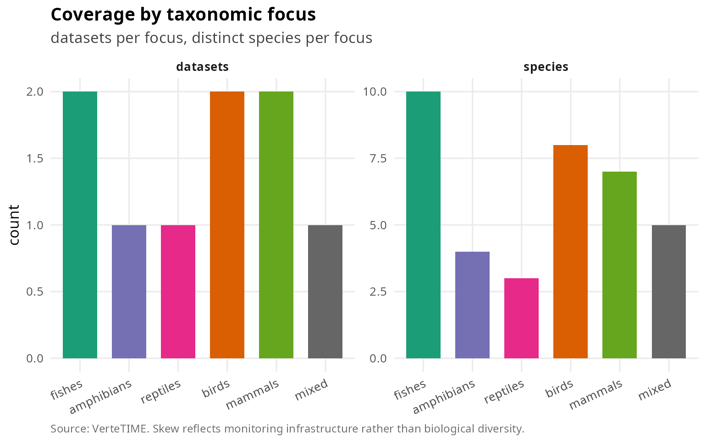
Datasets and species per taxonomic focus.
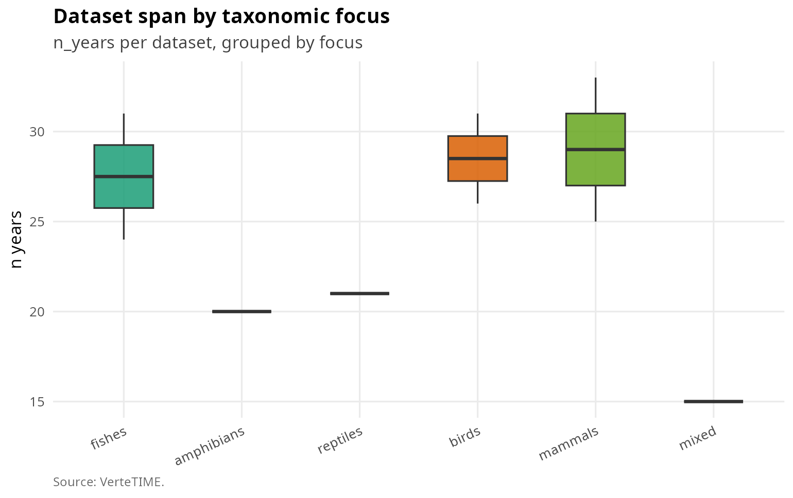
Per-dataset span by focus.
Top-N most monitored species
vt_plot_top_species(co, n = 10)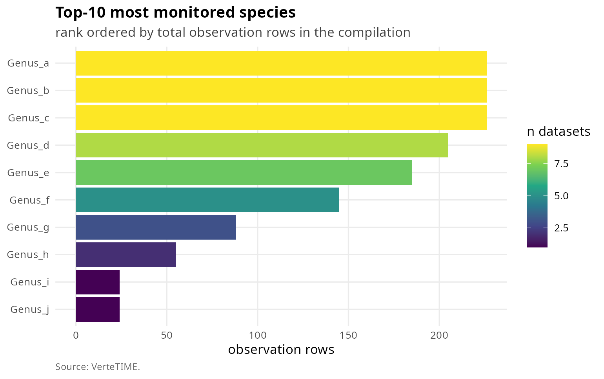
Top-10 most monitored species.
Temporal coverage
vt_plot_lasagna(co, sample_n = NULL)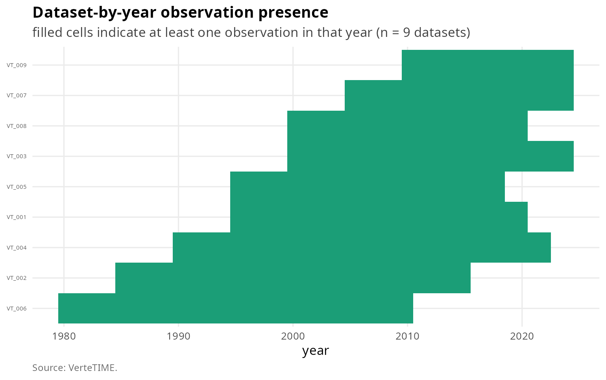
Lasagna plot of dataset-by-year presence.
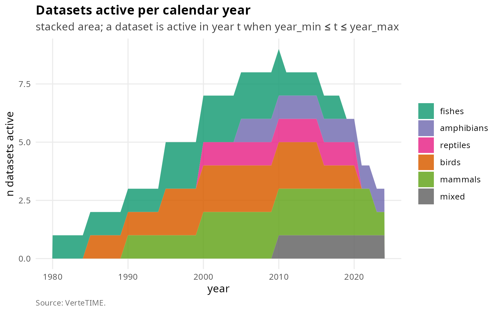
Datasets active per calendar year, stacked by focus.
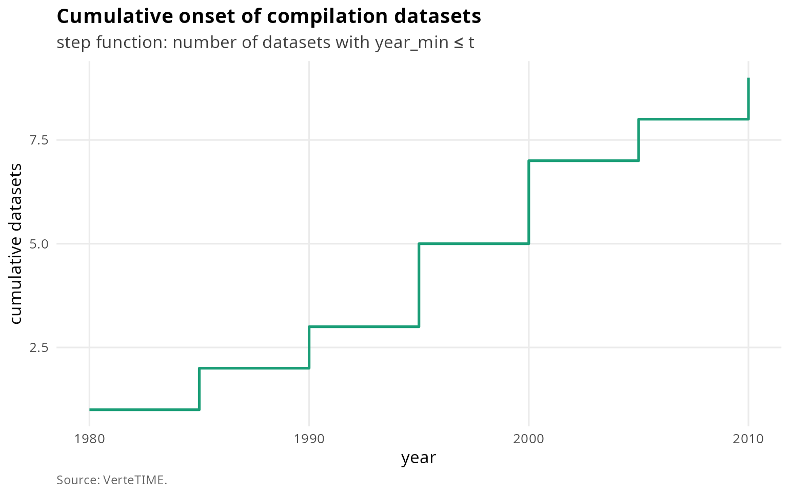
Cumulative onset curve.
vt_plot_year_ridges(co, which = "first")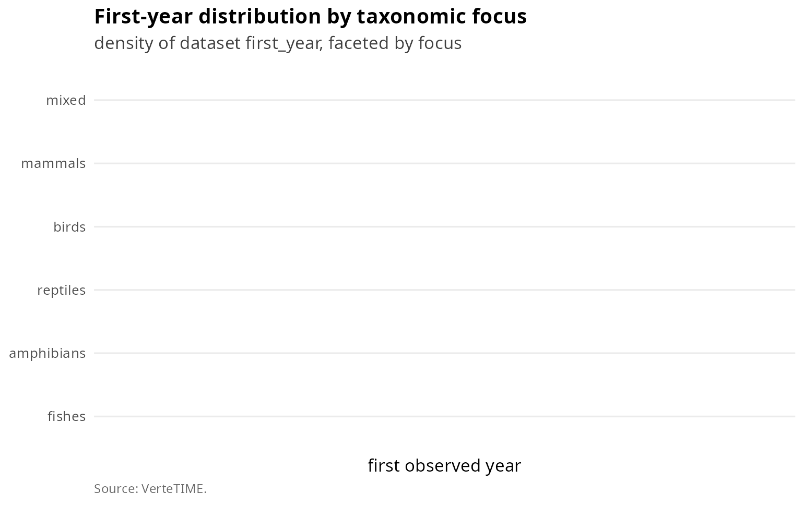
First-year ridge by focus.
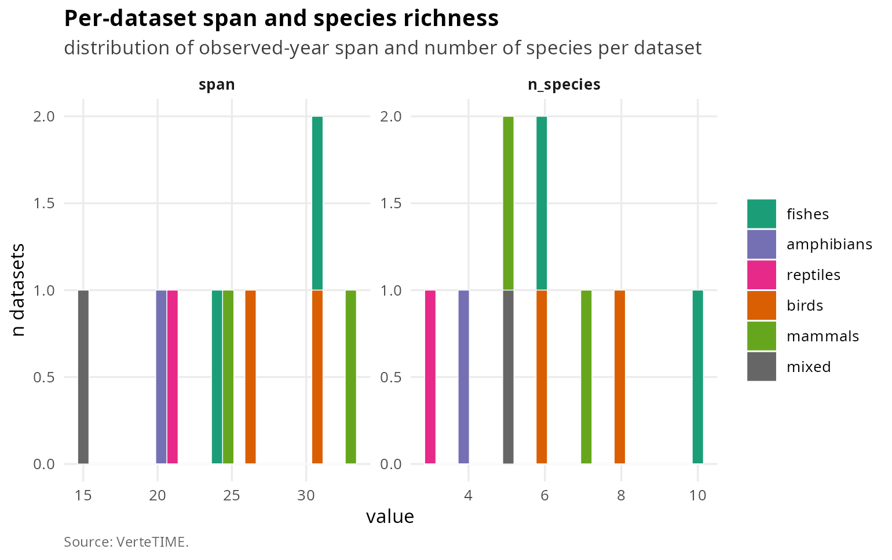
Span and species-richness distributions.
Community-level analyses
co_sub <- vt_filter(co, dataset_id %in% c("VT_001", "VT_002", "VT_003"))
vt_plot_whittaker(co_sub)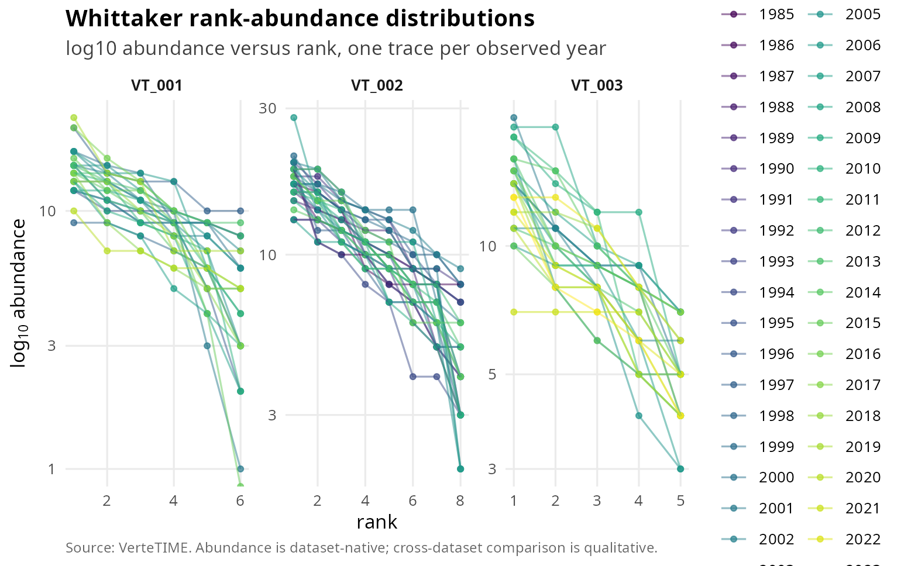
Whittaker rank-abundance per year for the first three datasets.
vt_plot_alpha_timeline(co, index = "H")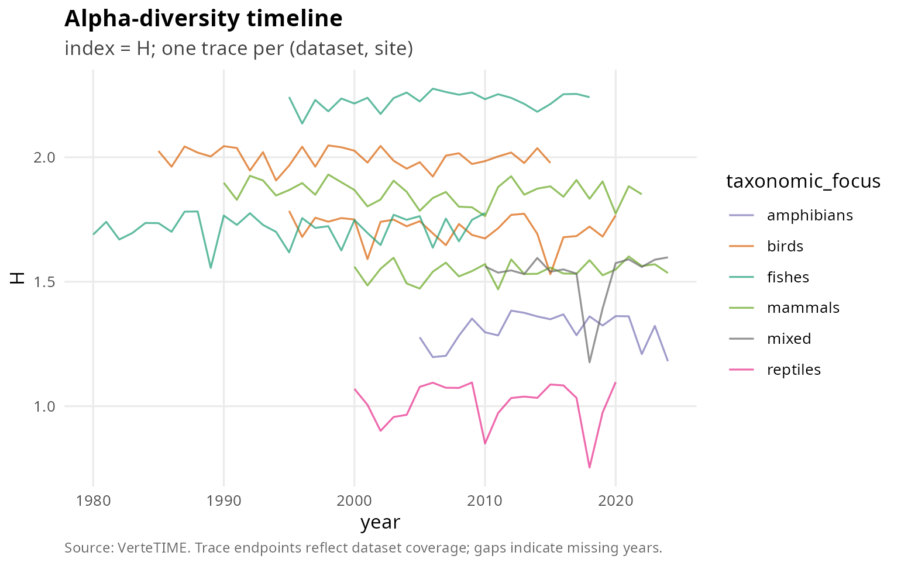
Shannon entropy timeline per (dataset, site).
vt_plot_alpha_hist(co, index = "H")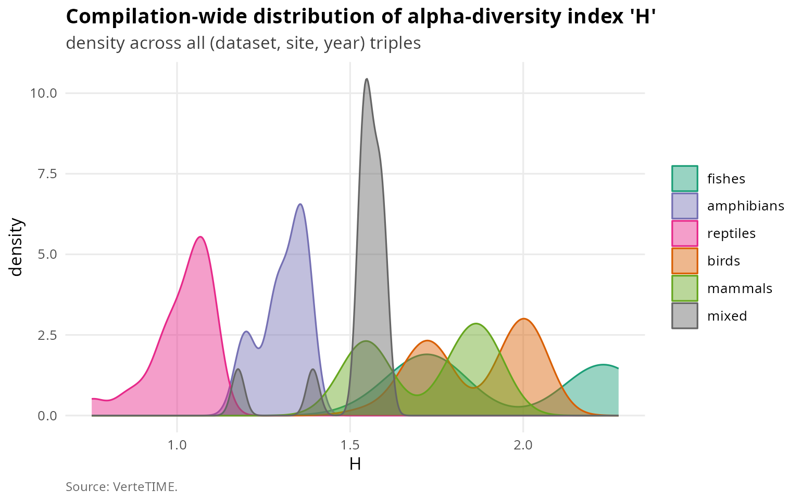
Compilation-wide distribution of Shannon entropy.
tt <- vt_temporal_turnover(co_sub, method = "bray", pair = "all_pairs")
vt_plot_beta_heatmap(tt)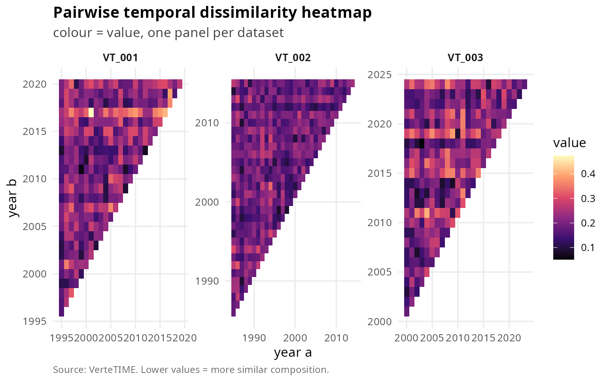
Bray-Curtis pairwise temporal dissimilarity, faceted by dataset.
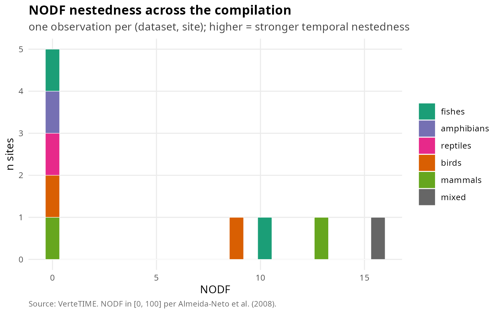
NODF nestedness across the compilation.
Database timeline (positional comparator)
![Two-panel positional comparator across biodiversity time-series compilations cited by VerteTIME. Top panel: publication-event milestones (citation, series count and licence on each tab); LPI v1/v2 and BioTIME v1/v2 appear as adjacent rows to document the growth of those databases between successive releases. Bottom panel: calendar-year span of the underlying data. Taxonomic scope varies across rows: LPI, RivFishTIME, BBS, PECBMS, CBC, eBird Trends and TEAM/Wildlife Insights are vertebrate-only; GPDD, BioTIME and PREDICTS are multi-taxon.](vt-introduction_files/figure-html/timeline-1.png)
Two-panel positional comparator across biodiversity time-series compilations cited by VerteTIME. Top panel: publication-event milestones (citation, series count and licence on each tab); LPI v1/v2 and BioTIME v1/v2 appear as adjacent rows to document the growth of those databases between successive releases. Bottom panel: calendar-year span of the underlying data. Taxonomic scope varies across rows: LPI, RivFishTIME, BBS, PECBMS, CBC, eBird Trends and TEAM/Wildlife Insights are vertebrate-only; GPDD, BioTIME and PREDICTS are multi-taxon.
Limitations and mitigations
The synthetic compilation above is parametric and will not reproduce
the heavy tails, long gaps and unit-class heterogeneity of the real
compilation. Use this vignette to learn the function calls; consult the
long-form manuscript for diagnostics on the real 132-dataset
compilation. The world-map figure depends on coordinates being
transcribed from each dataset’s primary reference; when those values are
placeholders, the plot collapses to a single overlapping cluster.
Cross-series quantitative comparisons of abundance must stratify by
unit_class; community-structure metrics (Hill numbers,
beta-diversity, NODF) are dimensionless and cross-comparable.